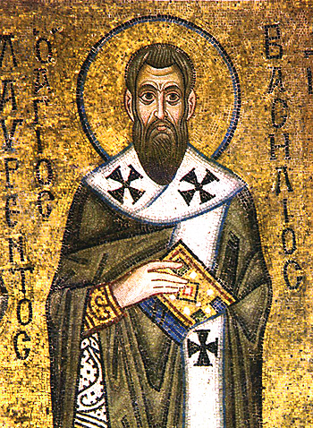
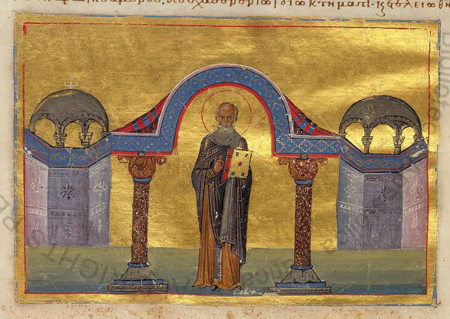
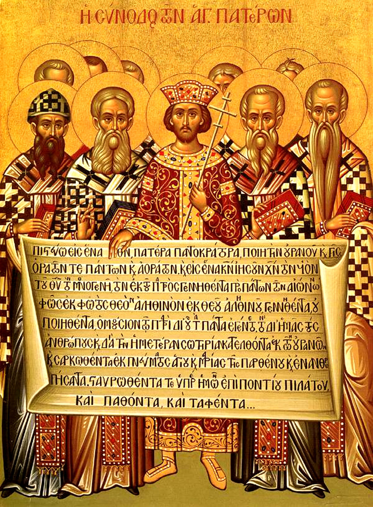
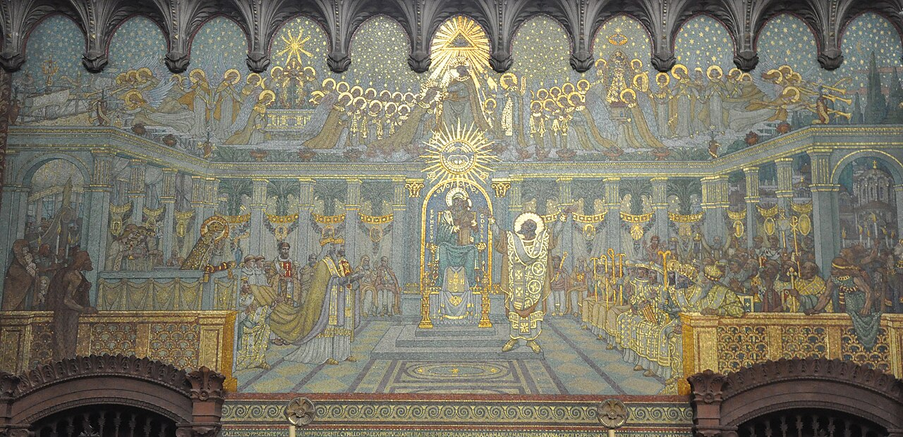

El campeón de la causa nicena pasó un tercio de su episcopado desterrado, y el credo que usted reza se escribió en otro concilio.
La imagen que todo el mundo tiene de Nicea es la de un portazo: trescientos padres, una fórmula, y el asunto resuelto. Si fuera así, la historia del cristianismo tendría un capítulo menos y sería menos interesante.
Lo que pasó después fue esto: durante veinte de los cincuenta y seis años que separan Nicea de Constantinopla, la fe oficial del Imperio romano no fue la nicena.
Atanasio de Alejandría, que es el campeón de la causa nicena, fue obispo unos cuarenta y cinco años y pasó más de dieciséis en el exilio, en cinco destierros distintos: a Tréveris bajo Constantino, a Roma bajo Constancio II, al desierto de la Tebaida entre monjes durante seis años, al alto Egipto bajo Juliano, y a las afueras de su propia ciudad bajo Valente.
La cifra se suele dar como «diecisiete años», y conviene no darla cerrada: la suma aritmética de los cinco periodos da en torno a dieciséis, la diferencia viene de los tramos sin fecha exacta, y la propia cronología atanasiana es objeto de discusión, porque las cartas festales y el índice siríaco no cuadran del todo con la Historia acephala. Lo defendible es «unos diecisiete años», que es más de un tercio de su episcopado.
Un obispo no pasa un tercio de su vida episcopal desterrado en un imperio donde su posición ha ganado.
Constancio II, emperador único desde 353, impuso por vía conciliar e imperial una serie de fórmulas no nicenas. La secuencia de 359 es vertiginosa y vale la pena seguirla.
En mayo se promulga el llamado credo fechado —se llama así porque empieza con la datación consular— que establece que el Hijo es «semejante al Padre». Se convocan dos concilios simultáneos: Rímini para Occidente, con unos cuatrocientos obispos, y Seleucia de Isauria para Oriente, con unos ciento cincuenta. En Rímini la mayoría reafirma Nicea y condena a los arrianos; una minoría de unos ochenta se separa y escribe al emperador. En octubre, los legados de Rímini, presionados, firman en Nicé de Tracia una versión revisada. El 31 de diciembre, representantes de ambos concilios asienten. Y en 360 Constantinopla lo confirma.
De ahí sale la frase de Jerónimo que se cita siempre: ingemuit totus orbis et arianum se esse miratus est — «gimió el mundo entero, y se asombró de ser arriano».
Y conviene usarla como lo que es. Es retórica polémica de un partidario niceno escribiendo unos veinte años después. No es un censo. Citarla como prueba estadística de que «el mundo era arriano» es exactamente el error que esta serie denuncia: úsese como testimonio de percepción, no de demografía.
Lo que sí hay que decir del credo homeo de 360 es algo que casi nunca se cuenta: no es «arrianismo». Es una moratoria imperial sobre el vocabulario metafísico. Prohíbe expresamente usar ousía y hypóstasis respecto del Padre, del Hijo y del Espíritu, «por no estar en las Escrituras y haber causado escándalo». Un compromiso por sustracción. Y fue el credo oficial del Imperio durante veinte años.

La historiografía ordena el campo del siglo IV en cuatro posiciones, y el esquema es útil siempre que se sepa lo que es.
Los nicenos, con homoousios, «de la misma sustancia». Los homoiousianos de Basilio de Ancira, con homoiousios, «de sustancia semejante» — que rechazaban a la vez el anomeísmo y el homoousios, al que leían como sabeliano y como no escriturario, hasta el punto de prohibirlo en su sínodo de Ancira de 358. Los homeos de Acacio de Cesarea, Ursacio y Valente, con homoios, «semejante» a secas y sin vocabulario de sustancia. Y los anomeos de Aecio y Eunomio, con anomoios, «desemejante», cuyo argumento merece darse bien porque es fuerte: la esencia divina consiste en ser ingénita, lo ingénito no puede engendrar sin dejar de serlo, luego lo engendrado no comparte esa esencia.
Y ahora la advertencia, que es importante. Esos cuatro partidos son un mapa pedagógico retrospectivo. Ninguno era una organización estable, las alianzas se rehacían concilio a concilio, y las propias etiquetas son en buena medida construcciones de los heresiólogos del siglo IV y de la erudición del XIX. «Semiarriano», que todavía se lee, es un término polémico heredado y se aplica confusamente a cosas distintas.
Lewis Ayres, que es quien mejor lo ha mostrado, hace algo que conviene subrayar: se abstiene expresamente de construir una nueva tipología. No cambia un esquema por otro. Lo disuelve en alianzas cambiantes y habla de trayectorias.
Entre el año 30 y el 451 no ocurre un ascenso: ocurre un estrechamiento. Pulsa los concilios en orden y mira encogerse el campo. Pulsa cualquier posición para leerla. Y pulsa el conmutador de la fuente, porque dos de ellas se mueven de sitio según quién las describa.
Las 14 posiciones de arriba y de abajo convivieron. Ninguna era «la herejía»: eran el repertorio disponible, y autores que después serán santos sostuvieron varias de ellas. Lo que hacen los concilios no es descubrir cuál era la verdadera, sino trazar fronteras, una tras otra, hasta que queda una franja muy delgada.
Las dos bandas no son un capricho de diseño. Son dos preguntas distintas, y entre 381 y 431 la pregunta cambia: se deja de discutir qué es el Hijo respecto del Padre y se empieza a discutir cómo se relacionan lo divino y lo humano dentro de él. Un plano de dos ejes continuos tendría que colocar a Arrio en algún punto de la pregunta del siglo V, y ese punto sería inventado.
La salida la dan tres hombres de Capadocia: Basilio de Cesarea, Gregorio de Nacianzo y Gregorio de Nisa. La fórmula es una ousía, tres hypostáseis: una esencia, tres subsistencias. Lo común y lo propio.
El relato de manual dice que los tres capadocios resolvieron el problema. Conviene matizarlo en dos direcciones.
Primero: no fue creación de la nada. El precedente decisivo es el Tomus ad Antiochenos de Atanasio, de 362, que ante el cisma de Antioquía no obliga a ninguna de las dos partes a adoptar la fórmula de la otra: declara que quienes dicen «tres hypostáseis» no son triteístas y quienes dicen «una» no son sabelianos, porque ambos afirman lo mismo del Hijo. Ese documento desacopla ousía de hypóstasis — que hasta entonces eran sinónimos, incluso en los anatemas del propio credo de 325 — y deja el terreno preparado. Los capadocios construyen sobre eso desde los años setenta.
Segundo: la lectura «social» de los capadocios —tres centros de conciencia— es moderna, y procede de un esquema del siglo XIX que oponía un Occidente que parte de la unidad a un Oriente que parte de la pluralidad. Ese esquema se ha proyectado hacia atrás durante cien años, y hoy está desmontado.
Lo exacto es decir que los capadocios estabilizaron la distinción y la hicieron operativa, sobre una vía ya abierta.

El concilio de Constantinopla se reúne de mayo a julio de 381, con unos ciento cincuenta obispos y ningún obispo occidental. No fue «ecuménico» ni por convocatoria ni por composición.
Y el orden de los acontecimientos importa más que el concilio. Teodosio I llega al trono de Oriente en 379, en un Oriente dominado por los homeos desde 360, y en febrero de 380 promulga el edicto de Tesalónica, que impone como fe del Imperio la que profesan el obispo de Roma y el de Alejandría. Es decir: el concilio ratifica eclesiásticamente una decisión ya tomada políticamente, y no al revés. Demófilo, el obispo homeo de Constantinopla, es conminado a entregar las iglesias y las pierde.
El concilio confirma la fe de Nicea y condena el arrianismo, la negación de la divinidad del Espíritu y el apolinarismo. Establece además, en su canon tercero, que el obispo de Constantinopla tiene la primacía de honor después del de Roma, «porque Constantinopla es la Nueva Roma» — una cláusula de consecuencias enormes y disputada desde el primer día. Gregorio de Nacianzo preside un tramo y dimite durante el propio concilio; le sucede Nectario, un laico sin bautizar.
Y hay un dato que vale por toda la tesis de esta entrega: el segundo concilio ecuménico fue declarado ecuménico setenta años después de celebrarse, en Calcedonia.
Esto es lo que casi nadie ha oído, y es verificable palabra por palabra.
El texto que se recita en las liturgias no es el credo de 325. Es el niceno-constantinopolitano, de 381, que respecto del anterior quita, añade y reformula.
Desaparece la glosa «esto es, de la sustancia del Padre», que era la frase más combativa del texto de 325. Desaparecen los cuatro anatemas finales — y con ellos la cláusula que identificaba ousía e hypóstasis, precisamente la que la distinción capadocia volvía insostenible.
Se añade «hacedor del cielo y de la tierra»; «engendrado del Padre antes de todos los siglos»; «se encarnó del Espíritu Santo y de María Virgen»; «crucificado por nosotros bajo Poncio Pilato»; «y fue sepultado»; «según las Escrituras»; «está sentado a la derecha del Padre»; «vendrá con gloria». Se añade «y su reino no tendrá fin», que está escrita contra Marcelo de Ancira, aliado de Atanasio y firmante niceno, que enseñaba un reinado del Verbo con término. Y se añade todo el artículo largo del Espíritu Santo —«Señor y dador de vida, que procede del Padre, que con el Padre y el Hijo es adorado y glorificado, que habló por los profetas»— donde 325 tenía solamente «y en el Espíritu Santo», sin un predicado.
El Filioque, de paso, no está en ninguna de las dos versiones: es un añadido latino posterior.

Hay además un problema historiográfico que conviene no planchar. Ningún documento conservado cita ni menciona el texto de 381 antes de las actas de Calcedonia, en 451. Éfeso, en 431, reafirma el de 325, y su canon séptimo prohíbe componer otra fe. En Calcedonia muchos obispos no lo conocían: el texto se sacó de los archivos de Constantinopla y se aceptó «no como suplemento de omisión alguna, sino como interpretación auténtica de la fe de Nicea». La posición mayoritaria sigue siendo que se adoptó en 381 —Kelly observa que el concilio no fue tenido por ecuménico hasta 451, de modo que su falta de rastro en el intervalo no prueba nada—, y hay además buenas razones para pensar que deriva de un credo bautismal independiente retocado. Pero el primer testimonio textual es setenta años posterior, y eso se dice.
En 431, Éfeso. Cirilo de Alejandría contra Nestorio de Constantinopla, por si María puede llamarse Theotokos, «la que da a luz a Dios». Y el modo en que se desarrolló conviene contarlo, porque es dato y no insidia: Cirilo abrió el concilio el 22 de junio sin esperar a la delegación antioquena de Juan, que llevaba dos semanas de retraso, y sin los legados papales, que llegaron en julio. El representante imperial protestó y pidió aplazamiento. Nestorio fue depuesto y condenado en una sola jornada. Cinco días después llegó Juan de Antioquía, celebró concilio aparte y depuso a Cirilo. El emperador ratificó al principio las tres deposiciones.
Dos años más tarde, la Fórmula de Unión de 433 reconcilió a Cirilo con Juan sobre un texto de redacción antioquena que hablaba de «unión de las dos naturalezas» — y que cada parte pudo leer en su propia clave. Esa ambigüedad productiva es la que estalla en 451.

En 451, Calcedonia, convocado por el emperador Marciano, con unos quinientos veinte obispos o representantes. La Definición reconoce a un solo Cristo en dos naturalezas, «sin confusión, sin cambio, sin división, sin separación». Los dos primeros adverbios excluyen a Eutiques; los dos últimos, lo que se leía bajo el nombre de Nestorio. A Apolinar, de paso, no lo excluye ninguno de los cuatro: lo excluye otra cláusula, la que afirma que Cristo es consustancial a nosotros según la humanidad y tiene alma racional y cuerpo.
Y la Definición dice «en dos naturalezas», no «de dos naturalezas». Esa preposición, que parece un detalle de gramática, es el epicentro del cisma que viene. De eso trata la última entrega.
El credo homeo de Constantinopla 360 fue el credo oficial del Imperio hasta 380. Veinte de los cincuenta y seis años.
Más de dieciséis años fuera de su sede, en un episcopado de unos cuarenta y cinco. Y la cronología exacta la discuten todavía los especialistas.
«Gimió el mundo entero, y se asombró de ser arriano.» Retórica de un partidario veinte años después, no un censo.
Impone la fe de Roma y Alejandría un año antes del concilio. El concilio ratifica lo ya decidido.
Es el concilio que declara ecuménico a Constantinopla 381 — y el primero que cita su credo. Antes de 451 no hay rastro del texto.
La imagen del concilio de Nicea que acompaña este capítulo representa a los padres de 325 sosteniendo un paño con el credo de 381. No es un montaje nuestro ni una curiosidad: es un icono antiguo, su propia ficha lo dice, y la transcripción del griego lo confirma.
Que la iconografía haya fundido los dos concilios en uno solo, atribuyendo a Nicea un texto que Nicea no escribió, es exactamente el fenómeno que esta entrega describe — con la diferencia de que aquí no lo cuenta un historiador, lo cuenta un pintor que no sabía que lo estaba contando.
Es consenso que el Imperio fue mayoritariamente no niceno durante buena parte del periodo 325-381 y que el credo homeo de 360 fue la fe oficial hasta 380; que Atanasio sufrió cinco destierros; que el edicto de Tesalónica precede en un año al concilio de 381; que el texto litúrgico actual es el niceno-constantinopolitano y no el de 325; y que la Definición de Calcedonia dice «en dos naturalezas».
Está en debate abierto si el texto de 381 se aprobó en 381, dado que el primer testimonio es de 451; y el esquema mismo de los «cuatro partidos», que la investigación reciente trata como un mapa retrospectivo y no como cuatro organizaciones estables.
Tres cifras y citas que no damos redondas. Los años de exilio de Atanasio: la suma aritmética da unos dieciséis y la cifra corriente es diecisiete; damos «unos diecisiete» y decimos que la cronología se discute. La frase de Jerónimo: es retórica de parte escrita veinte años después, no un dato demográfico. Y el número de obispos de Calcedonia, que las fuentes dan entre quinientos veinte y más de seiscientos.
Y una precisión que la divulgación suele errar: ninguno de los cuatro adverbios de Calcedonia apunta a Apolinar. A Apolinar lo excluye la cláusula que afirma que Cristo es consustancial a nosotros según la humanidad y posee alma racional y cuerpo. Decirlo importa, porque de Apolinar viene la fórmula que será bandera en la entrega siguiente.
Para 325-381. Atanasio, De synodis, Historia Arianorum y Tomus ad Antiochenos (362), en Athanasius Werke · Jerónimo, Altercatio Luciferiani et Orthodoxi (Dialogus contra Luciferianos) 19, ed. Aline Canellis, CCSL 79B, Brepols, 2000, y SC 473, Cerf, 2003 · credo homeo de Constantinopla 360 · Sócrates, HE II · Sozomeno, HE IV · R. P. C. Hanson, The Search for the Christian Doctrine of God, T&T Clark, 1988 · Lewis Ayres, Nicaea and its Legacy, Oxford University Press, 2004 · T. D. Barnes, Athanasius and Constantius, Harvard University Press, 1993.
Para los capadocios. Basilio, Cartas 38, 214 y 236, y Sobre el Espíritu Santo · Gregorio de Nacianzo, Discursos teológicos 27-31 · Gregorio de Nisa, Contra Eunomio y Ad Ablabium.
Para 381 y el credo. Cánones del concilio de Constantinopla · edicto Cunctos populos (Tesalónica, febrero de 380), Codex Theodosianus XVI,1,2 · J. N. D. Kelly, Early Christian Creeds, Longman, para el texto griego y la discusión sobre su adopción.
Para 431 y 451. Actas del concilio de Éfeso y Fórmula de Unión de 433, transmitida en la carta de Cirilo a Juan de Antioquía · Tomo de León a Flaviano (449) · Definición de Calcedonia, con los cuatro adverbios ἀσυγχύτως, ἀτρέπτως, ἀδιαιρέτως y ἀχωρίστως · canon 28 de Calcedonia.